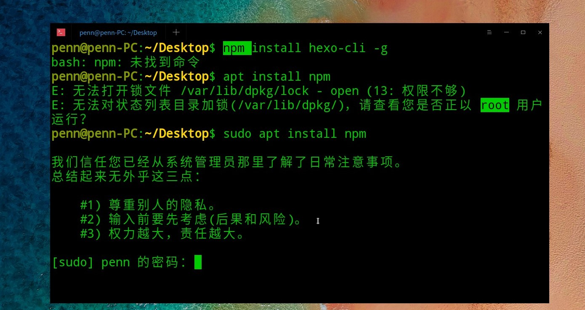
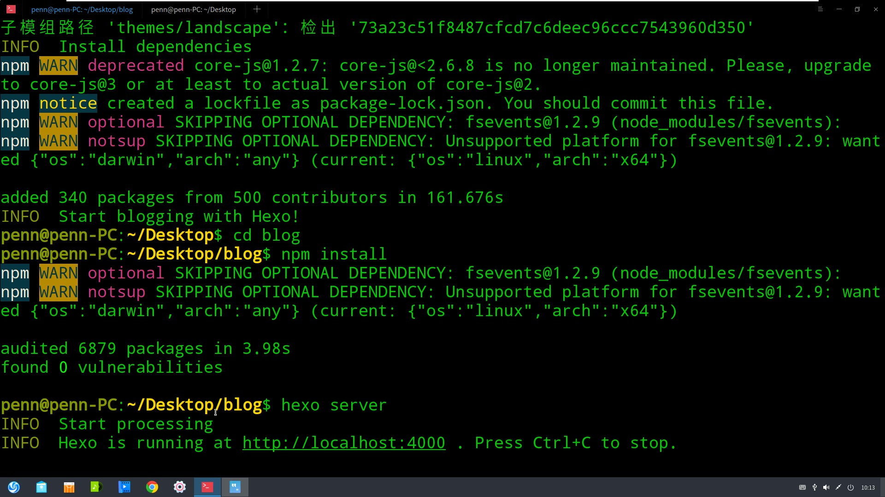
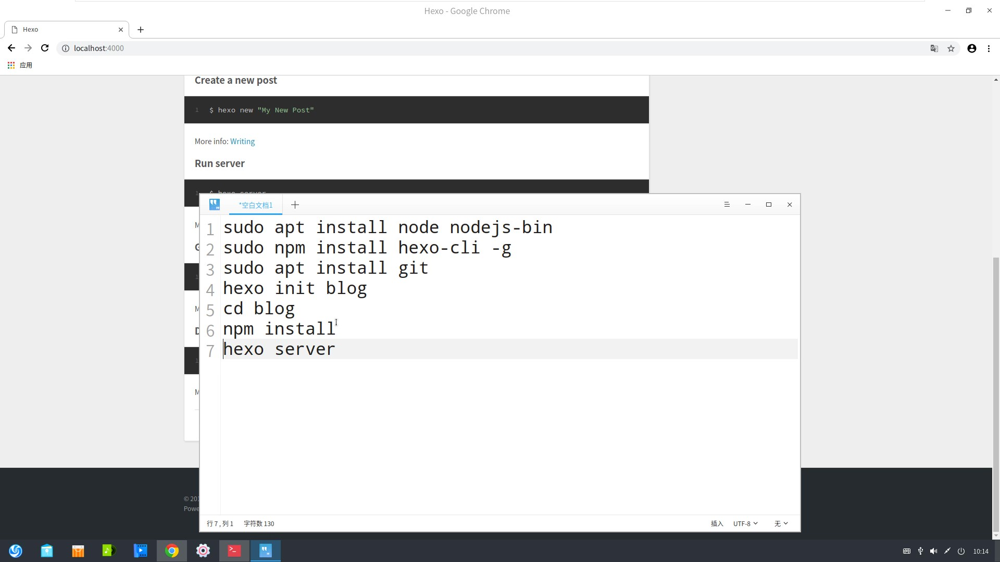
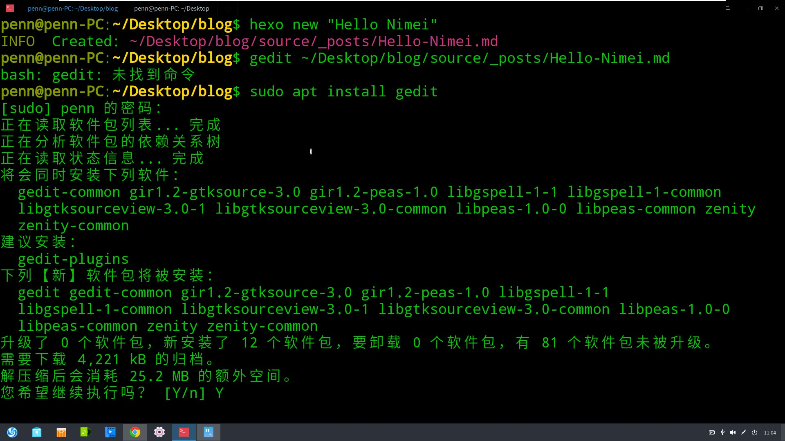
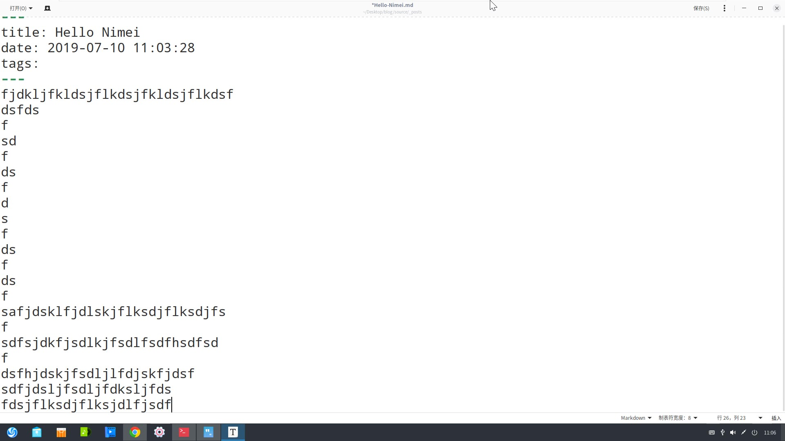
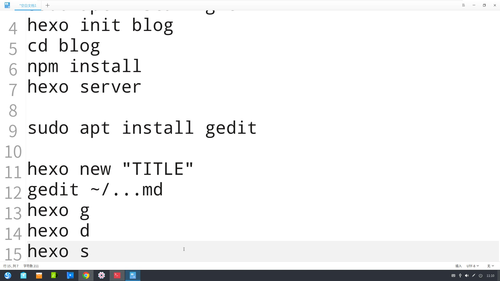

<!DOCTYPE html>
<html>
<head><meta name="generator" content="Hexo 3.9.0">
  <meta charset="utf-8">
  

  
  <title>Hexo</title>
  <meta name="viewport" content="width=device-width, initial-scale=1, maximum-scale=1">
  <meta property="og:type" content="website">
<meta property="og:title" content="Hexo">
<meta property="og:url" content="http://yoursite.com/index.html">
<meta property="og:site_name" content="Hexo">
<meta property="og:locale" content="default">
<meta name="twitter:card" content="summary">
<meta name="twitter:title" content="Hexo">
  
    <link rel="alternate" href="/atom.xml" title="Hexo" type="application/atom+xml">
  
  
    <link rel="icon" href="/favicon.png">
  
  
    <link href="//fonts.googleapis.com/css?family=Source+Code+Pro" rel="stylesheet" type="text/css">
  
  <link rel="stylesheet" href="/css/style.css">
</head>
</html>
<body>
  <div id="container">
    <div id="wrap">
      <header id="header">
  <div id="banner"></div>
  <div id="header-outer" class="outer">
    <div id="header-title" class="inner">
      <h1 id="logo-wrap">
        <a href="/" id="logo">Hexo</a>
      </h1>
      
    </div>
    <div id="header-inner" class="inner">
      <nav id="main-nav">
        <a id="main-nav-toggle" class="nav-icon"></a>
        
          <a class="main-nav-link" href="/">Home</a>
        
          <a class="main-nav-link" href="/archives">Archives</a>
        
      </nav>
      <nav id="sub-nav">
        
          <a id="nav-rss-link" class="nav-icon" href="/atom.xml" title="RSS Feed"></a>
        
        <a id="nav-search-btn" class="nav-icon" title="Search"></a>
      </nav>
      <div id="search-form-wrap">
        <form action="//google.com/search" method="get" accept-charset="UTF-8" class="search-form"><input type="search" name="q" class="search-form-input" placeholder="Search"><button type="submit" class="search-form-submit">&#xF002;</button><input type="hidden" name="sitesearch" value="http://yoursite.com"></form>
      </div>
    </div>
  </div>
</header>
      <div class="outer">
        <section id="main">
  
    <article id="post-note-7-11" class="article article-type-post" itemscope itemprop="blogPost">
  <div class="article-meta">
    <a href="/2019/07/15/note-7-11/" class="article-date">
  <time datetime="2019-07-15T04:29:00.000Z" itemprop="datePublished">2019-07-15</time>
</a>
    
  </div>
  <div class="article-inner">
    
    
      <header class="article-header">
        
  
    <h1 itemprop="name">
      <a class="article-title" href="/2019/07/15/note-7-11/">note_7.11</a>
    </h1>
  

      </header>
    
    <div class="article-entry" itemprop="articleBody">
      
        <p>博客笔记的另外一种方法：<br>下载Ｇridea.<br>Gridea    记录笔记<br>onenote 有道笔记。<br>搜索Coding.net并注册，yangxiang1.coding.me注册用户并创建项目．然后和Ｇridea相对应上．然后直接创建新的项目然后在里面写笔记．</p>

      
    </div>
    <footer class="article-footer">
      <a data-url="http://yoursite.com/2019/07/15/note-7-11/" data-id="cjy3wwlk500038oxisqo8mdk7" class="article-share-link">Share</a>
      
      
    </footer>
  </div>
  
</article>


  
    <article id="post-note-7-10-1" class="article article-type-post" itemscope itemprop="blogPost">
  <div class="article-meta">
    <a href="/2019/07/15/note-7-10-1/" class="article-date">
  <time datetime="2019-07-15T04:27:36.000Z" itemprop="datePublished">2019-07-15</time>
</a>
    
  </div>
  <div class="article-inner">
    
    
      <header class="article-header">
        
  
    <h1 itemprop="name">
      <a class="article-title" href="/2019/07/15/note-7-10-1/">note_7.10</a>
    </h1>
  

      </header>
    
    <div class="article-entry" itemprop="articleBody">
      
        
      
    </div>
    <footer class="article-footer">
      <a data-url="http://yoursite.com/2019/07/15/note-7-10-1/" data-id="cjy3wwlk400028oxi8apqxe3x" class="article-share-link">Share</a>
      
      
    </footer>
  </div>
  
</article>


  
    <article id="post-note-7-10" class="article article-type-post" itemscope itemprop="blogPost">
  <div class="article-meta">
    <a href="/2019/07/15/note-7-10/" class="article-date">
  <time datetime="2019-07-15T04:20:17.003Z" itemprop="datePublished">2019-07-15</time>
</a>
    
  </div>
  <div class="article-inner">
    
    
    <div class="article-entry" itemprop="articleBody">
      
        <hr>
<p>title: note_7.10<br>date: 2019-07-14 23:51:50<br>tags:<br>hexo博客的部署．更新和上线<br>（前提是在deepin的Linux里进行操作，hexo ,apt)</p>
<p>１．hexo博客的部署<br>首先打开deepin版本，右击打开终端，进行如下操作<br>npm install hexo-cli -g<br>apt install npm<br><br>sudo apt install npm<br>输入密码<br>sudo apt install node nodejs-bin<br>sudo npm install hexo-cli -g<br>sudo apt install git<br>hexo init blog<br>cd blog<br>npm install<br>hexo server<br><br>以上完成后当出现localhost:4000说明以上hexo博客的部署正确．<br><br>这是关键步骤．</p>
<p>2.hexo博客的更新<br>写作：<br><br>sudo  apt install gedit<br>hexo new “title<br>gedit  ~/…md<br><br>(写好不等于发表)hexo g<br>hexo d<br>hexo s<br></p>
<p>3.hexo博客的上线<br>首先百度找到Github网站，第一步注册账号。<br>记住网址　　<a href="https://github.com/yangxiangbo/yangxiangbo.github.io.git" target="_blank" rel="noopener">https://github.com/yangxiangbo/yangxiangbo.github.io.git</a><br>进入终端，输入 cd blog<br>             sudo  npm  install  hexo-deployer-git  –save<br>             git config –global user.email “  “<br>             git config –global user.name  “   “<br>             gedit _config.yml<br>改type:  git<br>  repository:  <a href="https://github.com/yangxiangbo/yangxiangbo.github.io.git" target="_blank" rel="noopener">https://github.com/yangxiangbo/yangxiangbo.github.io.git</a><br>  branch:  master</p>
<p>hexo g<br>hexo d</p>
<p>之后更新博客笔记直接cd blog<br>                hexo new “TITLE”<br>                gedit ~/…md<br>                hexo g<br>                hexo d</p>

      
    </div>
    <footer class="article-footer">
      <a data-url="http://yoursite.com/2019/07/15/note-7-10/" data-id="cjy3wwljv00008oxifnyeq8iy" class="article-share-link">Share</a>
      
      
    </footer>
  </div>
  
</article>


  
    <article id="post-note-7-9" class="article article-type-post" itemscope itemprop="blogPost">
  <div class="article-meta">
    <a href="/2019/07/14/note-7-9/" class="article-date">
  <time datetime="2019-07-14T15:29:52.000Z" itemprop="datePublished">2019-07-14</time>
</a>
    
  </div>
  <div class="article-inner">
    
    
      <header class="article-header">
        
  
    <h1 itemprop="name">
      <a class="article-title" href="/2019/07/14/note-7-9/">note_7.9</a>
    </h1>
  

      </header>
    
    <div class="article-entry" itemprop="articleBody">
      
        <p>7月９日有关于虚拟机里基本操作：<br>１．删除vmware系统：选择最上面那栏的虚拟机，点击管理，选从磁盘中删除．</p>
<p>２．快照，拍摄快照帮助恢复文件:右键新建文件夹，在放个记事本，看左下角，然后删除，点击虚拟机，有个恢复的。</p>
<p>3.屏幕保护（时间），登陆root（登root,右上角的电源，里面有root）,</p>
<p>4.Linux的命令：打开终端（桌面面任何位置右击）<br>（1）可以新建文件夹:  \mkdir （创建目录make directory  mkdir DIRNAME）<br>例如mkdir nidama再按enter键，会在桌面上看见<br>   mkdir  -p 1/2/3/4/5<br>   mkdir   dir{1..100}<br>(2)ls(list):显示目录中的文件。直接ls<br>(3)touch(创建文件) : touch FILENAME<br>(4)rm(remove)删除文件: rm  FILENAME y, rm -f FILENAME(都删了)，看一下提示;删除目录时，rm -r名字（有提醒，按y）,rm -r-f(直接删目录)<br>(5).cd (切换目录)，change directory</p>
<p>5.命令+【-选项】+【参数】，其中选项和参数可以省略，参数（多个的时候要有空格）和选项（顺序可以换-f  -r,-fr,-rf,-r  -f）可以有多个.</p>
<p>6.怎么安装软件：联网.(基础）</p>
<p>yum list显示软件列表 yum install APPNAME 安装指定软件<br>yum search APPNAME搜索  yum check-update检查是否需要更新<br>yum update APPNAME更新指定软件  yum update更新所有软件<br>yum remove APPNAME卸载指定软件</p>

      
    </div>
    <footer class="article-footer">
      <a data-url="http://yoursite.com/2019/07/14/note-7-9/" data-id="cjy3wwlk700058oxidxnosjmv" class="article-share-link">Share</a>
      
      
    </footer>
  </div>
  
</article>


  
    <article id="post-yangxiang-note" class="article article-type-post" itemscope itemprop="blogPost">
  <div class="article-meta">
    <a href="/2019/07/14/yangxiang-note/" class="article-date">
  <time datetime="2019-07-14T09:52:56.000Z" itemprop="datePublished">2019-07-14</time>
</a>
    
  </div>
  <div class="article-inner">
    
    
      <header class="article-header">
        
  
    <h1 itemprop="name">
      <a class="article-title" href="/2019/07/14/yangxiang-note/">yangxiang_note</a>
    </h1>
  

      </header>
    
    <div class="article-entry" itemprop="articleBody">
      
        <p>7月8日<br>1.VMWARE：虚拟机器键。虚拟化：用剩下的资源做更多的事情。<br>2.接口：功能性的实现成为接口。<br>3.创建新的虚拟机：一般选择典型来安装，按照提醒步骤来进行。若选择自定义（高级），硬件兼容性：15.x有限制，安装来源：光盘：物理光盘，安装光盘映像文件：.iso，选稍后安装，装win7系统（32位和64位区别：64位快。32位省，决定权在于内存。阈值：常量。64位支持大于等于4G，32位支持4G以内。指的是系统，查看这台电脑右击属性，位数的更换方式为重装，选版本，虚拟机名称（最好英文），保存位置（不要放在c盘，不要出现中文，不要输入特殊字符），处理器（几只手）：处理器数量：每个处理器的内核数量（脑）：一核两线程，内存资源4G，使用网络地址转换，I/O控制键，一个负责写另一个负责读:选择推荐的。磁盘类型选推荐。创建新，磁盘大小选推荐，单个性能好（好），多个方便存储，默认，<br>4.安装win7操作系统(msdn.itellyou.cn):语言-下载类型—7_版本类别-x86表示32位<br>把镜像放在虚拟机里，点一下cd,点击使用iso映像文件，启动时连接后再按确定，点击开启此虚拟机，绿色的，选择自定义高级，选下一步，等。<br>5.window.微软，<br>linux.红帽    Ret Hat EnterPrise Linus(RHEL)商用, Cent OS7免费服务器, Fedora桌面级真实机。<br>安装Linux：选择CENT OS 7 64位，（服务器可以装两个cpu），选择第一个download，然后回车，安装位置点击完成，软件选择点击左面有GNOME桌面，(图形到命令)，点击完成，等他完成，点击开始安装。Root密码设置比较复杂的密码点击两次完成和创建用户都选。位置相当于任务管理器。</p>

      
    </div>
    <footer class="article-footer">
      <a data-url="http://yoursite.com/2019/07/14/yangxiang-note/" data-id="cjy3wwlk600048oxiilyga5n4" class="article-share-link">Share</a>
      
      
    </footer>
  </div>
  
</article>


  
    <article id="post-hello-world" class="article article-type-post" itemscope itemprop="blogPost">
  <div class="article-meta">
    <a href="/2019/07/14/hello-world/" class="article-date">
  <time datetime="2019-07-14T09:42:57.141Z" itemprop="datePublished">2019-07-14</time>
</a>
    
  </div>
  <div class="article-inner">
    
    
      <header class="article-header">
        
  
    <h1 itemprop="name">
      <a class="article-title" href="/2019/07/14/hello-world/">Hello World</a>
    </h1>
  

      </header>
    
    <div class="article-entry" itemprop="articleBody">
      
        <p>Welcome to <a href="https://hexo.io/" target="_blank" rel="noopener">Hexo</a>! This is your very first post. Check <a href="https://hexo.io/docs/" target="_blank" rel="noopener">documentation</a> for more info. If you get any problems when using Hexo, you can find the answer in <a href="https://hexo.io/docs/troubleshooting.html" target="_blank" rel="noopener">troubleshooting</a> or you can ask me on <a href="https://github.com/hexojs/hexo/issues" target="_blank" rel="noopener">GitHub</a>.</p>
<h2 id="Quick-Start"><a href="#Quick-Start" class="headerlink" title="Quick Start"></a>Quick Start</h2><h3 id="Create-a-new-post"><a href="#Create-a-new-post" class="headerlink" title="Create a new post"></a>Create a new post</h3><figure class="highlight bash"><table><tr><td class="gutter"><pre><span class="line">1</span><br></pre></td><td class="code"><pre><span class="line">$ hexo new <span class="string">"My New Post"</span></span><br></pre></td></tr></table></figure>

<p>More info: <a href="https://hexo.io/docs/writing.html" target="_blank" rel="noopener">Writing</a></p>
<h3 id="Run-server"><a href="#Run-server" class="headerlink" title="Run server"></a>Run server</h3><figure class="highlight bash"><table><tr><td class="gutter"><pre><span class="line">1</span><br></pre></td><td class="code"><pre><span class="line">$ hexo server</span><br></pre></td></tr></table></figure>

<p>More info: <a href="https://hexo.io/docs/server.html" target="_blank" rel="noopener">Server</a></p>
<h3 id="Generate-static-files"><a href="#Generate-static-files" class="headerlink" title="Generate static files"></a>Generate static files</h3><figure class="highlight bash"><table><tr><td class="gutter"><pre><span class="line">1</span><br></pre></td><td class="code"><pre><span class="line">$ hexo generate</span><br></pre></td></tr></table></figure>

<p>More info: <a href="https://hexo.io/docs/generating.html" target="_blank" rel="noopener">Generating</a></p>
<h3 id="Deploy-to-remote-sites"><a href="#Deploy-to-remote-sites" class="headerlink" title="Deploy to remote sites"></a>Deploy to remote sites</h3><figure class="highlight bash"><table><tr><td class="gutter"><pre><span class="line">1</span><br></pre></td><td class="code"><pre><span class="line">$ hexo deploy</span><br></pre></td></tr></table></figure>

<p>More info: <a href="https://hexo.io/docs/deployment.html" target="_blank" rel="noopener">Deployment</a></p>

      
    </div>
    <footer class="article-footer">
      <a data-url="http://yoursite.com/2019/07/14/hello-world/" data-id="cjy3wwlk200018oxi3mfhe1b6" class="article-share-link">Share</a>
      
      
    </footer>
  </div>
  
</article>


  


</section>
        
          <aside id="sidebar">
  
    

  
    

  
    
  
    
  <div class="widget-wrap">
    <h3 class="widget-title">Archives</h3>
    <div class="widget">
      <ul class="archive-list"><li class="archive-list-item"><a class="archive-list-link" href="/archives/2019/07/">July 2019</a></li></ul>
    </div>
  </div>


  
    
  <div class="widget-wrap">
    <h3 class="widget-title">Recent Posts</h3>
    <div class="widget">
      <ul>
        
          <li>
            <a href="/2019/07/15/note-7-11/">note_7.11</a>
          </li>
        
          <li>
            <a href="/2019/07/15/note-7-10-1/">note_7.10</a>
          </li>
        
          <li>
            <a href="/2019/07/15/note-7-10/">(no title)</a>
          </li>
        
          <li>
            <a href="/2019/07/14/note-7-9/">note_7.9</a>
          </li>
        
          <li>
            <a href="/2019/07/14/yangxiang-note/">yangxiang_note</a>
          </li>
        
      </ul>
    </div>
  </div>

  
</aside>
        
      </div>
      <footer id="footer">
  
  <div class="outer">
    <div id="footer-info" class="inner">
      &copy; 2019 John Doe<br>
      Powered by <a href="http://hexo.io/" target="_blank">Hexo</a>
    </div>
  </div>
</footer>
    </div>
    <nav id="mobile-nav">
  
    <a href="/" class="mobile-nav-link">Home</a>
  
    <a href="/archives" class="mobile-nav-link">Archives</a>
  
</nav>
    

<script src="//ajax.googleapis.com/ajax/libs/jquery/2.0.3/jquery.min.js"></script>


  <link rel="stylesheet" href="/fancybox/jquery.fancybox.css">
  <script src="/fancybox/jquery.fancybox.pack.js"></script>


<script src="/js/script.js"></script>


  </div>
</body>
</html>